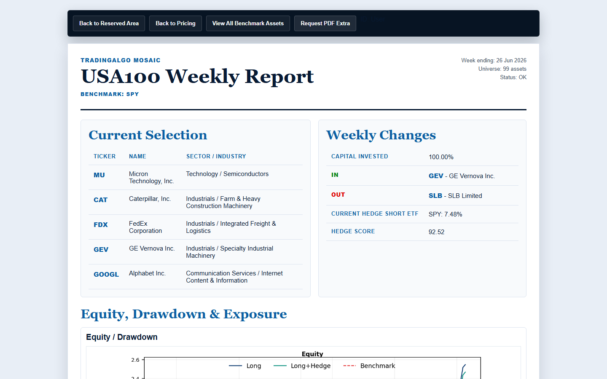

Mosaic Weekly Update
TradingAlgo Mosaic: Selective Strength Into the New Week
Weekly research abstract - Monday, June 29, 2026.
The latest TradingAlgo Mosaic weekly update highlights a highly selective market environment, with dispersion remaining elevated across regions and benchmarks. The strongest relative profiles came from DJ30, USA100, Nasdaq100, Mexico30, Germany30 and S.Africa30, where portfolio selection and rotation helped the Mosaic baskets outperform their reference benchmarks.
The report reviews current tickers, weekly in/out changes, hedge levels and net changes versus benchmark across the covered markets. It also points to more cautious conditions in Europe, the UK and South Korea, where local weakness and higher hedge levels require closer risk monitoring into the new week.
Leggi Articolo Completo nell'Area Riservata